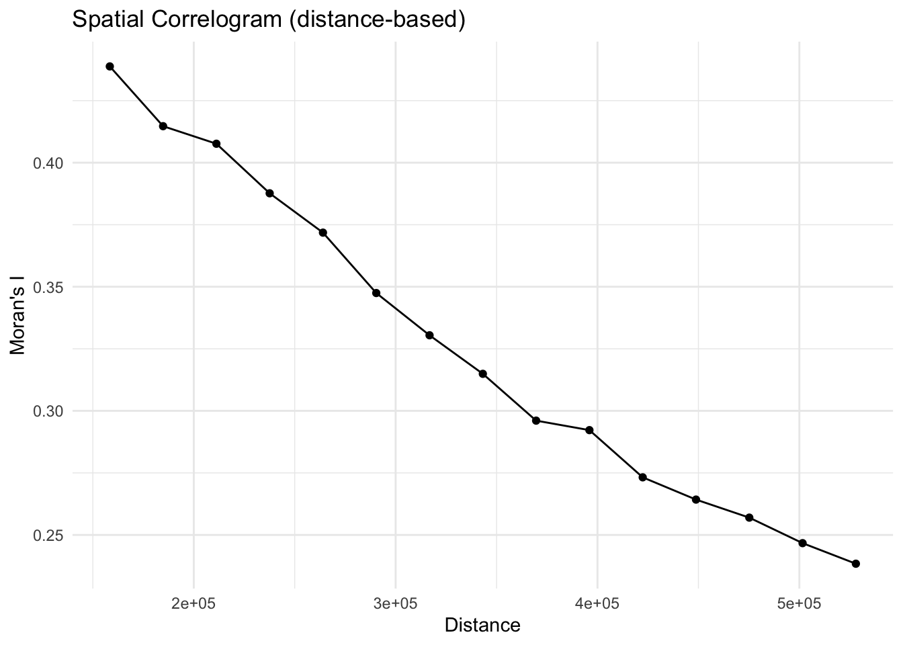
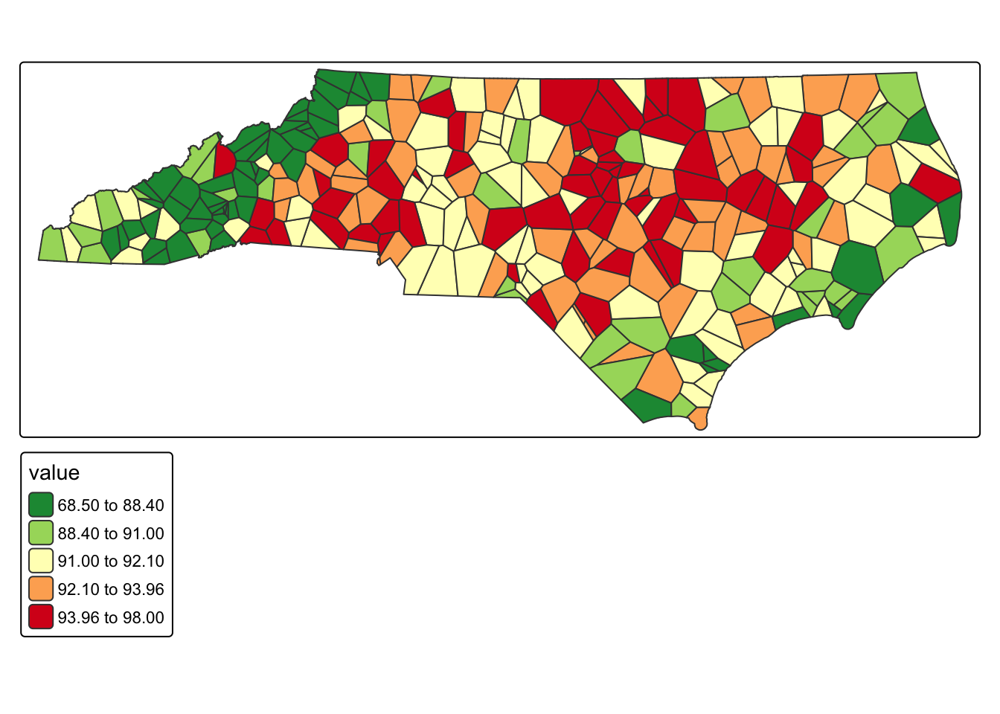
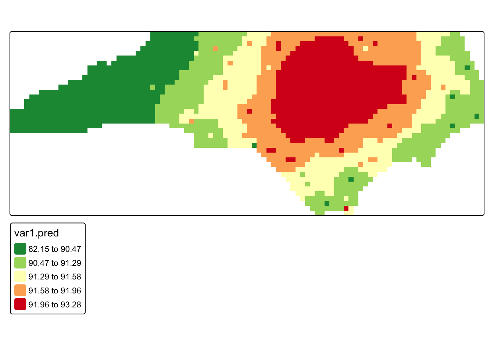

library(sf)
library(tidyverse)
library(gstat)
library(deldir)
library(spdep)
library(tmap)
library(terra)
library(sp)
#lightning
heatwave_temp <- st_read("https://drive.google.com/uc?export=download&id=1tZQU5NwZ3Z1lBtFbJTvM7clB1z0sXMI9") |> distinct()
nc_boundaries <- st_read("https://drive.google.com/uc?export=download&id=1SNy838Q7f7rvL6TFLmIZm-sKyRO7Htjw") 18 Continuous Surfaces
Some phenomena are spatially continuous, meaning they are present at every location rather than confined to discrete points. Many environmental variables, such as temperature and elevation, are spatially continuous.
In many cases, however, data about these continuous variables are only collected at discrete locations (i.e. weather monitoring stations, stream gauges, sample sites). Therefore, an important task is to predict these continuous values at unsampled locations. This is called spatial interpolation. We can also analyze the spatial structure of these continuous variables by examining how values at sampled points vary with distance and location.
We will use data from weather stations across North Carolina during 2025 heat wave (July 30, 2025) across North Carolina. The data is from the North Carolina State Climate Office
To follow along with this tutorial, make a new .Rmd document. As you move through the tutorial add chunks, headers, and relevant text to your document.
18.1 Reading in Data
Q1: Make a map and descriptive statistics table for maximum temperature values at North Carolina weather stations during July 30, 2025.
18.2 Spatial Structure
To predict continuous surfaces, we must assume that the underlying phenomenon has a predictable spatial structure. Methods for surface prediction rely on spatial autocorrelation. When a variable shows little or no spatial autocorrelation, it is not a good candidate for continuous surface prediction.
However, the strength of spatial autocorrelation is not constant across space. As we have seen in earlier chapters, some phenomena are strongly autocorrelated only over short distances, while others exhibit spatial dependence across much larger distances. A correlogram allows us to examine how spatial autocorrelation changes as distance increases by calculating Moran’s I across a range of distance-based neighbor definitions. This provides insight into both the strength of spatial autocorrelation and the spatial scale over which it persists.
The script below calculates a correlogram based on two neighborhood definitions– k-nearest neighbors (5 nearest to 30 nearest) and distance-based (from 30 miles to 100 miles).
#extract coordinates
coords <- st_coordinates(heatwave_temp)
#store heatwave values
z <- heatwave_temp$value
###NEAREST NEIGHBORS#####
#define number of neighbors
k_vals <- 5:30
#store
k_moranI <- numeric(length(k_vals))
k_correlogram <- data.frame(
k = k_vals,
moranI = k_moranI
)
for (i in seq_along(k_vals)) {
#k-nearest neighbors
lw <- knearneigh(coords, k = k_vals[i]) |>
knn2nb() |>
nb2listw(style = "W")
#Moran's I
m <- moran.test(z, lw)
k_correlogram$moranI[i] <-
as.numeric(m$estimate["Moran I statistic"])
}
ggplot(k_correlogram,
aes(x = k, y = moranI)) +
geom_point() +
geom_line() +
labs(
x = "Number of Nearest Neighbors (k)",
y = "Moran's I",
title = "Spatial Correlogram (k-nearest neighbors)"
) +
theme_minimal()
###DISTANCE BASED####
# Define distance bands (feet)
d_vals <- seq(158400, 528000, by = 26400)
#store
d_moranI <- numeric(length(d_vals))
d_correlogram <- data.frame(
distance = d_vals,
moranI = d_moranI
)
for (i in seq_along(d_vals)) {
#distance
nb <- dnearneigh(coords,
d1 = 0,
d2 = d_vals[i])
lw <- nb2listw(nb, style = "W")
# Moran's I
m <- moran.test(z, lw)
d_correlogram$moranI[i] <-
as.numeric(m$estimate["Moran I statistic"])
}
ggplot(d_correlogram,
aes(x = distance, y = moranI)) +
geom_point() +
geom_line() +
labs(
x = "Distance",
y = "Moran's I",
title = "Spatial Correlogram (distance-based)"
) +
theme_minimal()
Q2: What do our plots tell us about the strength of autocorrelation in maximum temperature values and the scale over which it persists?
Q3: Which neighborhood definition is more justifiable for this dataset?
18.3 Voronoi Polygons
Voronoi polygons divide space into regions based on proximity to point locations, assigning each location to the nearest point. Each polygon contains all locations that are closer to its generating point than to any other point. When used for spatial interpolation, Voronoi polygons create a discrete surface in which values change abruptly at polygon boundaries, reflecting nearest-neighbor influence rather than gradual spatial variation.
#calculate polygons
voronoi_polygons <- do.call(c, st_geometry(heatwave_temp)) |>
st_voronoi() |>
st_collection_extract() |> st_set_crs(2264)
#add values
heatwave_voronoi <- heatwave_temp
heatwave_voronoi$geometry <- voronoi_polygons[unlist(st_intersects(heatwave_temp, voronoi_polygons))]
#clip to nc boundaries
clipped_heatmap <- st_intersection(heatwave_voronoi, nc_boundaries)
#plot
tm_shape(clipped_heatmap) + tm_polygons(fill = "value", fill.scale = tm_scale_intervals(values = "-rd_yl_gn", style = "quantile"))
Q4: What spatial patterns do you see in the Voronoi diagram?
18.4 IDW
Inverse Distance Weighting (IDW) is a deterministic interpolation method that predicts values at unsampled locations as a weighted average of nearby observations, with closer points exerting more influence than distant ones.
A key parameter in IDW is the inverse distance power (IDP), which controls how rapidly influence declines as distance increases. Lower IDP (closer to 1) values allow more distant observations to contribute to predictions, while higher IDP (greater than 3) values emphasize local variation and weight nearby points more heavily.
Spatial correlograms provide a useful guide for selecting an appropriate IDP. By showing how spatial autocorrelation changes with distance, correlograms indicate whether similarity decays gradually or rapidly across space. When autocorrelation weakens slowly with distance, a moderate IDP is appropriate; when autocorrelation is confined to short distances, a higher IDP may better reflect the observed spatial structure.
#turn pm data into sp
heatwave_sp <- as(heatwave_temp, 'Spatial')
#turn into an sp object
nc_sp <- as(nc_boundaries, 'Spatial')
#create grid for the raster
grd <- as.data.frame(spsample(nc_sp, "regular", n=2000))
#sets parameters for the grid
names(grd) <- c("X", "Y")
coordinates(grd) <- c("X", "Y")
gridded(grd) <- TRUE
fullgrid(grd) <- TRUE
#sets crs
crs(grd) <- crs(heatwave_sp)
#does the interpolation. idp sets sets the influence of points based on distance: higher values = stronger influence of nearby points
heatwave.idw <- idw(value ~ 1, heatwave_sp, newdata=grd, idp = 1)[inverse distance weighted interpolation]#rasterize the grid
r <- rast(heatwave.idw)
r.m <- mask(r, nc_boundaries)
tm_shape(r.m) + tm_raster(col = "var1.pred", col.scale = tm_scale_intervals(values = "-rd_yl_gn", style = "quantile"))
Q5: Based on our correlogram, pick a more appropriate idp and rerun the code. How does the spatial pattern change?
Q6: In what cases might the IDW be more useful than the Voronoi diagram?